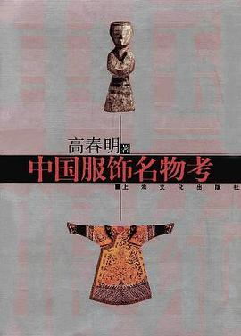

中华服饰历朝历代各不相同，今天的人们无法了解古代人的穿衣样子，往往是凭借古代人物画和戏曲、中国影视来想象。这次按《大明会典》及《明史》并参照明代写实主义的肖像画绘制一套Q版的《大明衣冠图志》，也许能够为大家了解明的服饰。并且努力证明一下原汁原味的汉族服饰并非没有的。

以画入史，详解宋代服饰演变史 。与以往通史式的服饰著作对宋代服饰点到为止的叙述相比，傅伯星先生的《宋代服饰史》，正如本书序一中浙江省文艺评论家协会顾问郑朝先生所评价的，可谓一部“画家演述的服装断代史”。此书作者在阅读大量宋人记载后，以近三十余年的形象资料搜集，从美术切入，以画家的功力，以画入史，以图说史，以大量详实形象的美术资料，独辟蹊径地对宋史的服饰史进行图解研究。

有对周代组玉佩的深入解读，其起源悠古，胤裔绵延，在服制与礼制中占有举足轻重的地位；有华夏深衣之推演，“深衣盖有制度，以应规、矩、绳、权、衡”，亦有“华带飞髾而杂襳罗”之楚风流布；汉式褒衣博带，历南北朝服制之变而辟为双轨，北魏改革后的冠冕衣裳，与北齐、北周改革后的胡服系统并行不悖；及至唐代，以浓墨重彩描绘女子之艳丽服装与精致妆容，“眉黛夺将萱草色，裙红妬杀石榴花”，“偏戴花冠白玉簪，睡容新起意沈吟，翠钿金缕镇眉心”；

这本书对中国历代服饰名物制度进行了研究，分发饰首饰考、首饰考、冠饰考、妆饰考、耳饰考、颈饰考、手饰考、服饰考、腰饰考、足饰考等10编。